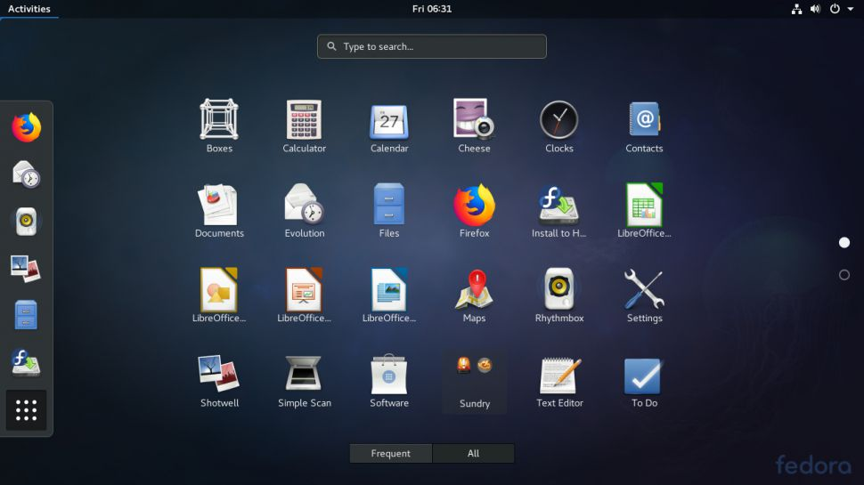

Entornos Gráficos En Linux
¿Qué son los entornos gráficos?
El entorno gráfico en Linux, conocido también como entorno de escritorio, proporciona a los usuarios una interfaz visual para interactuar con el sistema operativo. Es una capa adicional sobre el núcleo de Linux que permite gestionar ventanas, iconos, y menús mediante un sistema de ventanas como X11 o Wayland, que sirve como intermediario entre el hardware gráfico y el entorno de escritorio.

Principales componentes:
- Gestor de ventanas: define cómo se muestran y comportan las ventanas en la pantalla.
- Gestor de archivos: permite explorar y organizar archivos.
- Gestor de archivos: proveen un espacio para visualizar aplicaciones abiertas, notificaciones y accesos rápidos.
- Decoraciones de ventana: añaden bordes, botones y controles a cada ventana.
GNOME
GNOME (GNU Network Object Model Environment) es una interfaz gráfica de usuario (GUI) y un conjunto de aplicaciones de escritorio para usuarios del sistema operativo (SO) Linux. Su objetivo es hacer que un sistema operativo Linux sea fácil de usar para los no programadores.
Características:
- Interfaz moderna y limpia.
- Actividades para gestionar ventanas y aplicaciones.
- Soporte para extensiones que añaden funcionalidades.
Personalización:
Aunque GNOME es bastante minimalista, puedes personalizarlo mediante extensiones y temas disponibles en el sitio web de GNOME.
KDE Plasma
KDE Plasma Desktop Edition es un potente sistema operativo en el que utiliza KDE Plasma Desktop como interfaz de usuario principal. KDE Plasma Desktop viene con muchas aplicaciones preseleccionadas de alta calidad que se adaptan a todos los casos de uso de escritorios modernos.

Características:
- Escritorio altamente configurable.
- Herramientas como KRunner para lanzar aplicaciones y realizar búsquedas.
- Un conjunto completo de aplicaciones integradas (KDE Applications).
Personalización:
Puedes cambiar casi todos los aspectos de la interfaz, desde el diseño hasta los widgets y efectos visuales.
Xfce
Xfce es un entorno de escritorio ligero para sistemas tipo UNIX. Su objetivo es ser rápido y usar pocos recursos del sistema, sin dejar de ser visualmente atractivo y fácil de usar.
Características:
- Interfaz simple y funcional.
- Menú tradicional que recuerda a escritorios más antiguos.
- Buen soporte para múltiples escritorios virtuales.
Personalización:
Ofrece diversas opciones de personalización, aunque es menos visualmente impactante que GNOME o KDE.
LXQt
LXQt es un entorno de escritorio Qt ligero, que no estorba, ni cuelga, ni ralentiza los sistemas operativos basados en GNU/Linux. Y que, además, se centra en ser un escritorio clásico con un aspecto moderno.
Características:
- Interfaz sencilla y eficiente.
- Bajo consumo de recursos.
- Integración de herramientas básicas y eficientes.
Personalización:
Puedes modificar la apariencia y el comportamiento de los paneles y menús, aunque con menos opciones que KDE.
Cinnamon
Cinnamon es un entorno de escritorio gratuito y de código abierto para Linux y otros sistemas operativos similares a Unix, que originalmente se basó en GNOME 3, pero sigue las convenciones tradicionales de metáfora del escritorio.
Características:
- Interfaz intuitiva y amigable.
- Soporte para paneles y menús personalizables.
- Buen rendimiento en sistemas modernos y antiguos.
Personalización:
Ofrece varias opciones para personalizar el menú, los paneles y los temas.
• Personalización de la Interfaz Gráfica
La personalización de la interfaz gráfica en Linux es una de las características más atractivas. Aquí algunas formas en que puedes personalizar tu entorno:
- Temas: Cambiar el tema del escritorio, que afecta los colores, iconos y fuentes. Los entornos como GNOME y KDE tienen amplias bibliotecas de temas.
- Extensiones y Widgets: En GNOME y KDE, puedes agregar extensiones y widgets para mejorar la funcionalidad y el acceso rápido a herramientas. Por ejemplo, puedes añadir un reloj, gestor de tareas o acceso directo a aplicaciones.
- Fondos de Pantalla: Cambiar el fondo de pantalla es una forma sencilla de personalizar tu entorno. Puedes elegir entre imágenes predeterminadas o cargar las tuyas.
- Fuentes y Estilos: Puedes ajustar el tipo y tamaño de las fuentes, lo que no solo mejora la estética, sino también la legibilidad.
- Posición de los Paneles: Muchos entornos permiten mover paneles (superiores, inferiores, laterales) y personalizar su contenido y apariencia.
Referencias Bibliográficas
- Contributor, T. (2024, 23 abril). GNOME (GNU Network Object Model Environment). Data Center. https://www.techtarget.com/searchdatacenter/definition/GNOME-GNU-Network-Object-Model-Environment
- Fedora KDE Plasma Desktop. (s. f.). The Fedora Project. https://fedoraproject.org/spins/kde
- XFCE Desktop Environment. (s. f.). https://www.xfce.org/
- Albert, J. (2022, 3 noviembre). Sobre LXQt: ¿Qué es, características actuales y cómo se instala? Ubunlog. https://ubunlog.com/lxqt/#google_vignette